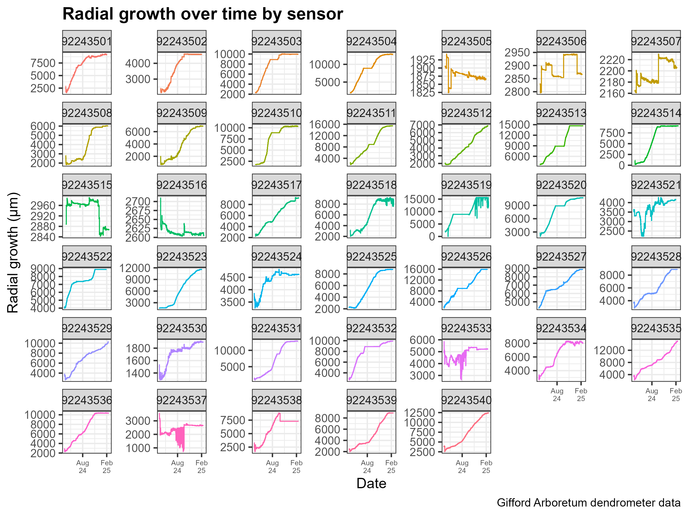
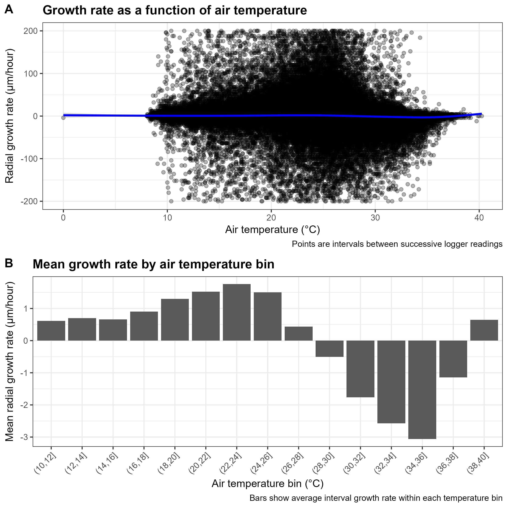
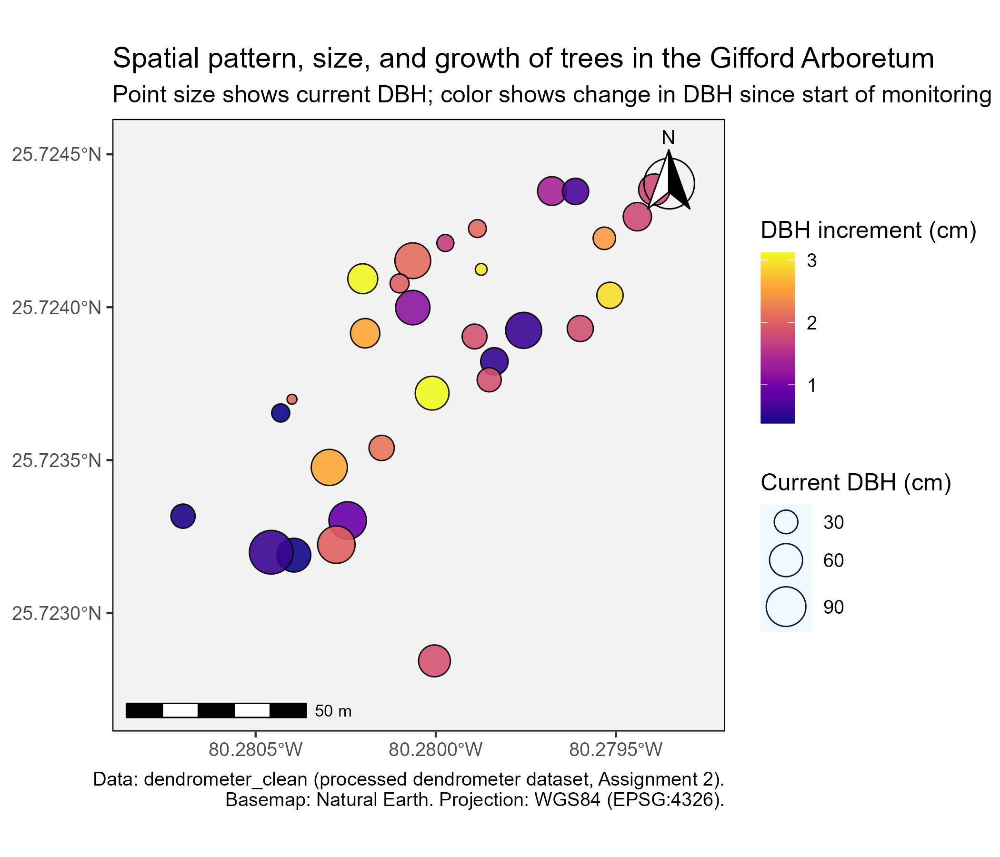

Tree Growth Dynamics in the Gifford Arboretum
Dendrometer-based analysis of radial growth, temperature, and spatial patterns
label: setup
include: false
library(tidyverse)
library(here)
library(lubridate)
library(sf)
library(ggspatial)
library(cowplot)
library(rnaturalearth)
# Load processed dendrometer data (Assignment 2 output)
dendro_clean <- readr::read_rds(
here("data", "processed", "dendrometer_clean.rds")
)
# Basic summaries for inline code
n_sensors <- dendro_clean |> distinct(sensor_id) |> nrow()
n_species <- dendro_clean |> distinct(species_name) |> nrow()
date_range <- range(dendro_clean$datetime, na.rm = TRUE)
date_start <- as.Date(date_range[1])
date_end <- as.Date(date_range[2])1 Introduction
Continuous dendrometer measurements provide a powerful way to quantify how tree stems expand and contract in response to both long-term growth and short-term environmental variation. In this project, I use dendrometer data from the Gifford Arboretum at the University of Miami to explore how radial growth varies over time, how growth rates relate to air temperature, and how tree size and growth are distributed across the arboretum.
The dataset analyzed here includes high-frequency dendrometer readings from n_sensors sensors installed on individually tagged trees representing n_species species, monitored between date_start and date_end. The analyses build on previous assignments focused on data wrangling, visualization, and spatial mapping, and bring them together into a single narrative.
2 Objectives
The main objective of this report is to synthesize information from the cleaned dendrometer dataset to address the following questions:
- Temporal dynamics
How does radial growth accumulate over time for individual trees, and how variable are these trajectories among sensors? - Growth–temperature relationships
How do short-term radial growth rates relate to air temperature, and are there temperature ranges associated with higher average growth rates? - Spatial patterns of size and growth
How are tree size (current DBH) and recent DBH increment distributed across the Gifford Arboretum, and do any broad spatial patterns emerge?
3 Data sources
3.1 Dendrometer time series
The primary data source is a set of raw dendrometer logger files exported as semicolon-delimited .csv files, one per sensor, stored in data/Dendrometer_Data/. Each file records:
A record ID (internal logger index)
A timestamp (date and time)
Air temperature in °C
A cumulative radial-growth value in micrometres (µm)
These files were combined and cleaned in the data wrangling script (scripts/01_processing/data_wrangling_dendro.R) to produce a single tidy dataset (dendrometer_clean.rds) containing all sensors and their associated metadata.
3.2 Tree metadata
Dendrometer time series were linked to tree-level metadata stored in data/gifford_dendro_tree_meta.csv, including:
Dendrometer ID (sensor ID)
Species name
Initial diameter at breast height (DBH) in cm
Latitude and longitude of each tree
These variables allow tree-level summaries (e.g., current DBH, DBH increment) and enable spatial visualization of sensor locations.
4 Data processing
This section summarizes the main processing steps used to go from raw logger files and metadata to an analysis-ready dataset. Full code is documented in the data wrangling script.
4.1 Combining raw logger files
All raw .csv files in data/Dendrometer_Data/ were read and combined into a single tibble. During import, a file column was added to track each row’s source file. The sensor ID was extracted from the filename and stored as sensor_id.
Key steps:
List raw files with
list.files()and apattern = "\\.csv$"filterRead and combine with
readr::read_delim()usingdelim = ";"Extract
sensor_idfrom each filename usingstringr::str_extract()
4.2 Tidy dendrometer table
From the combined table, the following variables were created:
record_id– logger record IDsensor_id– sensor identifier extracted from filenamedatetime– parsed usinglubridate::parse_date_time()with"Y.m.d H:M"formatair_temp_C– air temperature in °Cradial_growth_um– cumulative radial growth in µm
Intermediate raw-date columns were dropped, and the resulting dataset was stored in tidy_data.
4.3 Joining tree metadata
Tree metadata were read from gifford_dendro_tree_meta.csv, and key columns were standardized:
sensor_id(character)species_nameinitial_dbh_cmlatlon
This metadata was joined to the time series by sensor_id using dplyr::left_join(), producing dendro_clean, which contains both time-varying (growth, temperature) and time-invariant (species, location, initial DBH) variables.
4.4 Processed dataset
The final processed dataset, saved as data/processed/dendrometer_clean.rds, contains one row per sensor-time combination with the following key columns:
sensor_idspecies_nameinitial_dbh_cmlatlondatetimeair_temp_Cradial_growth_um
This is the dataset used for all subsequent visualizations.
5 Main Findings
5.1 Temporal patterns of radial growth
To explore how growth accumulates over time, I visualized radial growth trajectories for each sensor.
#| label: prep-time-series
# Start from the processed data and prepare for plotting
clean_data <- dendro_clean |>
mutate(
datetime = as.POSIXct(
datetime,
format = "%Y.%m.%d %H:%M",
tz = "America/New_York" ),
date = as.Date(datetime)
) |>
# Filter out impossible air temperatures
filter(
air_temp_C >= 0,
air_temp_C <= 45
)#| label: fig-time-series
#| fig-cap: "Radial growth trajectories over time for each dendrometer sensor in the Gifford Arboretum."
#| fig-width: 8
#| fig-height: 6
p_time <- clean_data |>
ggplot(aes(x = datetime,
y = radial_growth_um,
colour = sensor_id,
group = sensor_id)) +
geom_line(linewidth = 0.4) +
labs(
title = "Radial growth over time by sensor",
x = "Date",
y = "Radial growth (µm)",
colour = "Sensor ID",
caption = "Gifford Arboretum dendrometer data."
) +
facet_wrap(~ sensor_id, scales = "free_y") +
scale_x_datetime(
date_breaks = "6 months",
date_labels = "%b\n%y"
) +
theme_bw(base_size = 10) +
theme(
legend.position = "none",
plot.title = element_text(face = "bold"),
axis.text.x = element_text(size = 6)
)
p_time
These trajectories show how cumulative radial growth increased over the monitoring period. Some sensors display relatively smooth, gradual increases, whereas others show more irregular patterns, suggesting differences in tree growth dynamics, microenvironment, or data gaps.
5.2 Growth-temperature relationships
To examine how short-term growth responds to temperature, I computed growth rates between successive readings and related these to air temperature.
#| label: prep-growth-rate
data_rate <- clean_data |>
arrange(sensor_id, datetime) |>
group_by(sensor_id) |>
mutate(
radial_growth_diff_um = radial_growth_um - dplyr::lag(radial_growth_um),
dt_hours = as.numeric(
difftime(datetime,
dplyr::lag(datetime),
units = "hours")
),
growth_rate_um_per_h = radial_growth_diff_um / dt_hours
) |>
ungroup() |>
# Keep only sensible intervals
filter(
!is.na(growth_rate_um_per_h),
dt_hours > 0,
abs(growth_rate_um_per_h) <= 200 # drop impossible spikes
)#| label: fig-temp-scatter
#| fig-cap: "Relationship between radial growth rate and air temperature (A) and mean growth rate by temperature bin (B)."
#| fig-width: 8
#| fig-height: 8
# Scatter: growth rate vs temperature
p_temp_scatter <- data_rate |>
ggplot(aes(x = air_temp_C, y = growth_rate_um_per_h)) +
geom_point(alpha = 0.3) +
geom_smooth(se = TRUE, colour = "blue") +
labs(
title = "Growth rate as a function of air temperature",
x = "Air temperature (°C)",
y = "Radial growth rate (µm/hour)",
caption = "Points represent intervals between successive logger readings."
) +
theme_bw(base_size = 11) +
theme(
plot.title = element_text(face = "bold")
)
# Bin temperatures and compute mean growth rate
data_rate_binned <- data_rate |>
mutate(
temp_bin = cut(
air_temp_C,
breaks = seq(10, 40, by = 2)
)
) |>
filter(!is.na(temp_bin)) |>
group_by(temp_bin) |>
summarize(
mean_rate = mean(growth_rate_um_per_h, na.rm = TRUE),
.groups = "drop"
)
p_temp_binned <- ggplot(data_rate_binned,
aes(x = temp_bin, y = mean_rate)) +
geom_col() +
labs(
title = "Mean growth rate by air temperature bin",
x = "Air temperature bin (°C)",
y = "Mean radial growth rate (µm/hour)",
caption = "Bars show average growth rate within each temperature bin."
) +
theme_bw(base_size = 11) +
theme(
axis.text.x = element_text(angle = 45, hjust = 1),
plot.title = element_text(face = "bold")
)
growth_temp_panel <- cowplot::plot_grid(
p_temp_scatter,
p_temp_binned,
ncol = 1,
labels = c("A", "B")
)
growth_temp_panel
The scatterplot suggests a non-linear relationship between temperature and growth rate, with growth generally increasing with temperature up to an intermediate range before declining at the highest temperatures. The binned means further highlight temperature ranges associated with higher average growth, providing a coarse summary of “favorable” versus “less favorable” thermal conditions for radial expansion.
5.3 Spatial patterns of tree size and growth
Finally, I summarized the dendrometer data to the tree level and mapped current tree diameter and DBH increment across the Gifford Arboretum.
#| label: prep-spatial
# Collapse to one row per sensor / tree
dendro_sites <- dendro_clean |>
group_by(sensor_id, species_name, initial_dbh_cm, lat, lon) |>
summarize(
max_radial_growth_um = max(radial_growth_um, na.rm = TRUE),
.groups = "drop"
) |>
mutate(
# radial_growth_um is change in radius (µm); 1 µm = 1e-4 cm
delta_radius_cm = max_radial_growth_um * 1e-4,
delta_dbh_cm = 2 * delta_radius_cm,
current_dbh_cm = initial_dbh_cm + delta_dbh_cm
) |>
rename(
species = species_name,
dbh_current_cm = current_dbh_cm,
dbh_change_cm = delta_dbh_cm
) |>
select(sensor_id, species, dbh_current_cm, dbh_change_cm, lat, lon) |>
filter(
!is.na(lat),
!is.na(lon),
!is.na(dbh_current_cm),
!is.na(dbh_change_cm)
)
# Convert to sf object
dendro_sf <- dendro_sites |>
st_as_sf(coords = c("lon", "lat"), crs = 4326) # WGS84
# Bounding box and dynamic padding
bbox <- st_bbox(dendro_sf)
x_pad <- as.numeric(bbox["xmax"] - bbox["xmin"]) * 0.15
y_pad <- as.numeric(bbox["ymax"] - bbox["ymin"]) * 0.15
# Base map: USA outline for context
world <- rnaturalearth::ne_countries(scale = "medium", returnclass = "sf")
usa <- world |> dplyr::filter(admin == "United States of America")#| label: fig-map
#| fig-cap: "Spatial distribution, size, and DBH increment of dendrometer trees in the Gifford Arboretum."
#| fig-width: 7
#| fig-height: 6
p_dendro_struct <- ggplot() +
# Base layer for geographic context
geom_sf(data = usa, fill = "grey95", color = "grey80") +
# Dendrometer trees:
# size = estimated current DBH
# fill = DBH increment (growth)
geom_sf(
data = dendro_sf,
aes(size = dbh_current_cm, fill = dbh_change_cm),
shape = 21,
color = "black",
alpha = 0.9
) +
# Zoom in tightly around the arboretum
coord_sf(
xlim = c(bbox["xmin"] - x_pad, bbox["xmax"] + x_pad),
ylim = c(bbox["ymin"] - y_pad, bbox["ymax"] + y_pad),
expand = FALSE
) +
# North arrow & scale bar
annotation_north_arrow(
location = "tr",
which_north = "true",
style = north_arrow_fancy_orienteering
) +
annotation_scale(
location = "bl",
width_hint = 0.3
) +
# Scales & labels
scale_size_continuous(
name = "Current DBH (cm)",
range = c(2, 10)
) +
scale_fill_viridis_c(
name = "DBH increment (cm)",
option = "C"
) +
labs(
title = "Spatial pattern, size, and growth of trees in the Gifford Arboretum",
subtitle = "Point size shows current DBH; color shows change in DBH since start of monitoring",
caption = "Data: dendrometer_clean (processed dendrometer dataset).\nBasemap: Natural Earth. Projection: WGS84 (EPSG:4326)."
) +
theme_bw(base_size = 11) +
theme(
legend.position = "right",
panel.grid.major = element_line(linewidth = 0.2),
panel.background = element_rect(fill = "aliceblue"),
panel.border = element_rect(color = "black", fill = NA),
aspect.ratio = 1
)
p_dendro_struct
Most trees are clustered within the arboretum, and the map reveals variation in both current DBH and DBH increment across the site. Larger, presumably older trees often show substantial growth increments, but smaller individuals also contribute, suggesting a mix of size classes and growth strategies within the collection.
6 References
Dendrometer and tree metadata from the Gifford Arboretum (University of Miami).
Natural Earth data for basemap country polygons (USA).
Course materials and assignment descriptions from EVR 628 – Intro to Environmental Data Scnce.